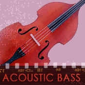

Rhythm and harmony instruments in jazz usually play the roots of chords that harmonize melodies and the melodic improvisation of others. They function as a bridge or the glue connecting the pure rhythm instruments with the harmony and melody instruments.
 Tuba
Tuba
The tuba is the lowest-sounding instrument in brass family of aerophones. The tuba is constructed much like a trumpet, in that sections of additional tubing are added as the performer depresses the valves. Like the trumpet, the tuba uses a mouthpiece to focus the buzzing of the lips (vibration) into the body of the instrument.
The tuba can be pitched either in C or Bb (meaning that the root pitch or fundamental of the main tube without the addition of any valves and their extra tubing), with Bb being the more common horn historically found in jazz. Tubas, like trombones, read music that is not transposed, unlike saxophones and trumpets which we will discuss in more detail later.
Marching versions of the tuba, called sousaphones, wrap themselves around the performer and sit on the shoulder. Sousaphones (invented by the early twentieth-century U.S. Marine Band leader John Philip Sousa) were used in early jazz like New Orleans Dixieland. Other models that are more compactly coiled sit in the performer's lap and are used for stage performances.
The tuba served as the bass line instrument in jazz through the early 1930s (Ragtime, Dixieland, through early Swing) and was replaced over time by the acoustic bass.
Watch and listen to 1950s studio musician, Bill Barber, performing on tuba. Watch and listen to the example.
Acoustic bass (aka Bass, String Bass, Double Bass, Bass Violin, Stand Up Bass, Dog House)The bass is the lowest-pitched member of the violin family. In the video example below, we see a good example of how chordophones work. In this acoustic bass duo, each bass player shortens strings with the fingers of the left hand to play higher pitches by moving closer to the plucking fingers of the right hand (and the reverse to play lower pitches). The string's vibration is transferred into the large acoustic resonator of the bass's body, which amplifies the sound.
The acoustic bass does not use frets like those found on a guitar, which allows the acoustic bass player to easily slide on the string between pitches. Also notice how the bass is both bowed and plucked.
Watch and listen to the bass duo of Rufus Reid and Michael Moore performing "Tea for Two." Watch and listen to the example.
 Electric bass
Electric bass
The electric bass needs an amplifier to be heard. It has frets like a guitar that allows the performer to always play a pitch in the same place on the fingerboard. The electric bass in jazz is exactly the same the instrument that is played in pop music, only it is performed in a jazz style.
Watch and listen to electric bassist Daryl Jones perform "Charlayne." Watch and listen to the example.